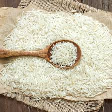
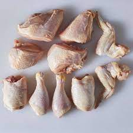
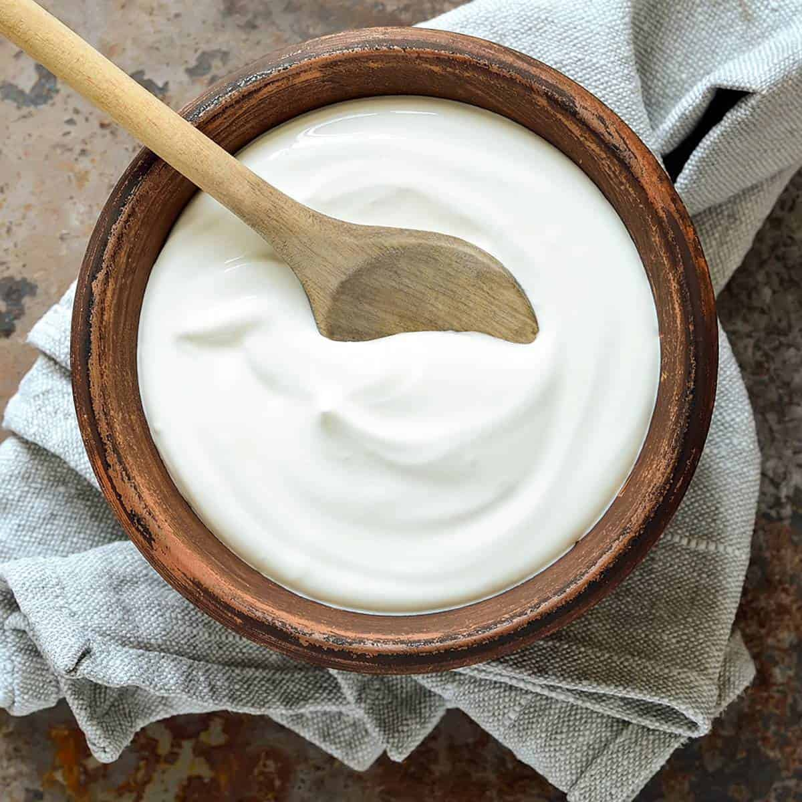
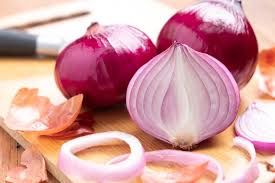
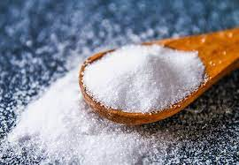

Ingredients:
- 2 cups basmati rice 
- 500g chicken, cut into pieces 
- 1 cup yogurt 
- 2 large onions, thinly sliced 
- 2 tomatoes, chopped
- 1/4 cup cooking oil or ghee
- 2 tablespoons biryani masala
- 1 tablespoon ginger-garlic paste
- 1/2 cup chopped mint leaves
- 1/2 cup chopped coriander leaves
- 4 cups water
- Salt to taste 
- Whole spices (bay leaves, cinnamon sticks, cardamom pods, cloves)


For marination:
- 1 teaspoon red chili powder
- 1/2 teaspoon turmeric powder
- 1 teaspoon garam masala
- Salt to taste
Instructions:
- Rinse the basmati rice under cold water until the water runs clear. Soak the rice in water for about 30 minutes.
- Marinate the chicken pieces with red chili powder, turmeric powder, garam masala, and salt. Add yogurt and mix well. Let it marinate for at least 1 hour.
- Heat oil or ghee in a large pot or biryani pot. Add the sliced onions and cook until they turn golden brown. Remove half of the fried onions and set them aside for garnishing.
- Add the ginger-garlic paste to the remaining onions in the pot and sauté until the raw smell disappears.
- Add the marinated chicken to the pot and cook until the chicken is browned on all sides.
- Add the chopped tomatoes, biryani masala, and salt. Cook until the tomatoes are soft and the oil starts to separate.
- Drain the soaked rice and add it to the pot. Stir gently to combine the rice with the chicken and spices.
- Add water to the pot. Bring it to a boil, then reduce the heat to low, cover, and let it simmer until the rice is cooked and the water is absorbed.
- In a separate pan, heat some ghee and fry the whole spices until they release their aroma.
- Once the rice is cooked, sprinkle the fried whole spices, chopped mint leaves, and chopped coriander leaves over the biryani. Also, add the reserved fried onions.
- Cover the pot with a tight-fitting lid and let it steam on low heat for another 10-15 minutes.
- Gently fluff the biryani with a fork and serve hot.
Finished Dish